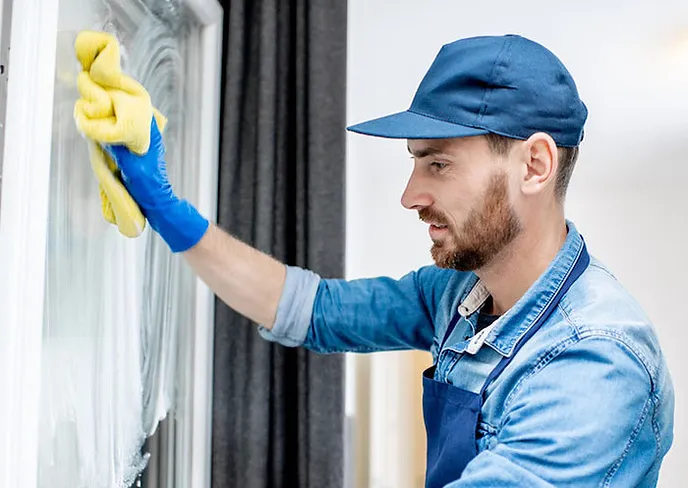

Who We Are
The Broom is a family-owned company and pride ourselves on treating you like family too. We are dedicated to solving your problems and letting you worry about what is important - running your business. You can be assured of quality, great service, and customer satisfaction every time. We offer free estimate so you can meet us, tell us your needs, and know what to expect for your first clean. Feel free to fill out the form on this page and a member of our team will reach out to discuss your cleaning needs in more detail.
Our Commitment
American workers are among the most productive in the entire world and have been for decades. Dual-income families are a fixture and so are work weeks and commutes that stretch beyond 40 hours into nights and weekends. Kids have homework, practice, rehearsals, sports meets, and a variety of other activities that require many parents to spend even more time out of the house. Working most commonly on a weekly or every other week schedule, Molly Maid gives busy individuals and families clean, comfortable homes to return to and enjoy—homes cleaned according to their individual wishes and services backed by a 24-hour satisfaction guarantee.